| 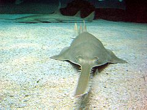 | ปลาฉนาก นับเป็นปลาที่ถือกำเนิดมานานกว่า 100 ล้านปีตั้งแต่ยุคครีเตเชียสที่ไดโนเสาร์ยังมีชีวิตอยู่และไม่ได้เปลี่ยนแปลงรูปร่างมากนักจากในอดีต ปลาฉนากที่สูญพันธุ์ไปแล้ว คือ Onchopristis มีความยาวกว่า 8 เมตร
(แต่จัดอยู่ในวงศ์ Sclerorhynchidae) เฉพาะฟันเลื่อยก็มีความยาวกว่า 2.5 เมตร แต่ก็ตกเป็นอาหารของไดโนเสาร์กินเนื้อขนาดใหญ่ เช่น สไปโนซอรัสสำหรับในประเทศไทย ในอดีตเคยมีรายงานการพบปลาฉนากไกลถึงแม่น้ำเจ้าพระยาในเขตอำเภอบางไทร จังหวัดพระนครศรีอยุธยาและบึงบอระเพ็ดในจังหวัดนครสวรรค์ ด้วยส่วนในจังหวัดสุราษฎร์ธานีปลาฉนากพบได้ในตำบลคลองฉนาก |
| 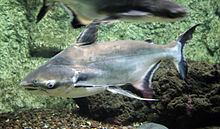 | ปลาเทพา หรือที่ในภาษาอีสานเรียกว่า ปลาเลิม (อังกฤษ: Chao Phraya giant catfish) เป็นปลาน้ำจืดขนาดใหญ่ชนิดหนึ่ง มีชื่อวิทยาศาสตร์ว่า Pangasius sanitwongsei อยู่ในวงศ์ปลาสวาย (Pangasiidae) ชื่อวิทยาศาสตร์ของปลาชนิดนี้ตั้งโดย ดร.ฮิว แมคคอร์มิค สมิธ อธิบดีกรมประมงคนแรกเพื่อเป็นเกียรติแด่ ม.ร.ว.สุวพันธุ์ สนิทวงศ์
ในฐานะที่เป็นผู้ผลักดันและบุกเบิกให้มีหน่วยงานทางด้านการศึกษาและจัดการสัตว์น้ำในประเทศซึ่งก็คือกรมประมงในปัจจุบันปลาเทพาพบเฉพาะในลุ่มน้ำเจ้าพระยาและลุ่มน้ำโขงเท่านั้น แต่ปัจจุบันหาได้ยากมากในแหล่งน้ำธรรมชาติเนื่องจากการทำประมงเกินขนาดและมลพิษทางน้ำอย่างไรก็ตาม กรมประมงสามารถเพาะขยายพันธุ์ปลาชนิดนี้ได้แล้วด้วยวิธีผสมเทียม |
| 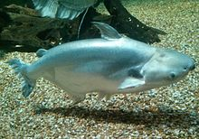 | ปลาเทโพ (อังกฤษ:Black ear catfish; ชื่อวิทยาศาสตร์: Pangasius larnaudii) ปลาน้ำจืดชนิดหนึ่งอยู่ในวงศ์ปลาสวาย (Pangasiidae) มีส่วนหัวและจะงอยปากมน ปากอยู่ค่อนไปทางด้านล่าง รูปร่างป้อมสั้น ปลาขนาดใหญ่มีลำตัวส่วนท้องลึก ปลายครีบหลัง ครีบท้อง ครีบอก ครีบท้อง และครีบก้นยื่นเป็นเส้นยาวเรียว มีแต้มสีดำเห็นชัดเจนที่ฐานครีบอก ตัวมีสีเทาคล้ำอมน้ำตาล ด้านข้างมีสีเทาจาง ด้านท้องสีจางอมชมพู ครีบสีจาง ครีบก้นมีแถบสีคล้ำตามยาว ครีบหางมีแถบสีคล้ำทั้งตอนบนและตอนล่าง มีขนาดประมาณ 50 เซนติเมตร ใหญ่สุดได้ถึง 1.5 เมตร
ปลาขนาดเล็กกินแมลงปลาขนาดใหญ่กินพืช เช่น ผลไม้,เมล็ดพืช,ปลา,หอย,แมลงตลอดจนถึงซากสัตว์ อาศัยอยู่ในแม่น้ำสายใหญ่และสาขาทั่วประเทศ โดยมักรวมฝูงกับปลาสวาย (P. hypophthalmus) ด้วย ซึ่งเป็นปลาที่อยู่ในสกุลเดียวกัน
เป็นปลาที่นิยมบริโภคโดยเฉพาะอย่างยิ่งเมื่อนำมาปรุง "แกงเทโพ" มีการเพาะเลี้ยงในประเทศไทยมานานกว่า 50 ปี และนิยมเลี้ยงเป็นปลาสวยงาม
มีชื่อเรียกอื่น ๆ อีก เช่น "หูหมาด", "หูดำ" หรือ "ปึ่ง" ในภาษาเหนือ เป็นต้น |
| 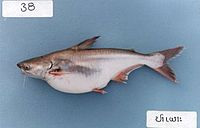 | ปลาโมง (อังกฤษ: Snail eater pangasius)[2] เป็นปลาน้ำจืดชนิดหนึ่ง มีชื่อวิทยาศาสตร์ว่า Pangasius conchophilus อยู่ในวงศ์ปลาสวาย (Pagasiidae) มีลักษณะคล้ายปลาเผาะ (P. bocourti) อันเป็นปลาที่อยู่ในสกุลเดียวกัน มีตาเล็ก ปากอยู่ด้านล่าง หนวดยาวถึงบริเวณช่องเหงือก แถบฟันบนเพดานเชื่อมติดกันเป็นรูปเหลี่ยม รูปร่างเพรียว หางคอด ก้านครีบแข็งที่หลังค่อนข้างยาวและใหญ่ หัวและลำตัวสีเทาหรือสีเขียวมะกอกเหลือบเหลืองหรือเขียว บางตัวสีเทาจาง ข้างลำตัวสีจางและไม่มีแถบคล้ำ ท้องสีจาง ครีบสีจาง ลูกปลามีสีเทาอมน้ำตาลหรือเหลือง มีขนาดประมาณ 60-80 เซนติเมตร
พบปลาที่ถูกค้นพบในปี พ.ศ. 2534 โดยระบุว่าเป็นปลาชนิดใหม่ที่มีขนาดเล็ก กินกุ้ง, \ปู และแมลงเป็นส่วนใหญ่ ปลาขนาดใหญ่กินหอย,ปูและเมล็ดพืช โดยหอยจะถูกกินทั้งตัวแล้วถ่ายออกมาเฉพาะเปลือกอาศัยในแม่น้ำสายใหญ่ พบมากในแม่น้ำโขง,แม่น้ำเจ้าพระยาและแม่น้ำบางปะกง มีการบริโภคโดยการปรุงสด และหมักสับปะรด เนื้อมีรสชาติดี ในต่างประเทศ เช่น เวียดนาม มาเลเซีย มีการเลี้ยงปลาชนิดนี้เป็นปลาเศรษฐกิจด้วย
มีชื่อเรียกอื่นๆอีก เช่น "ปลาโมงออดอ้อ","ปลาเผาะ","ปลาลึง"(เรียกซ้ำกับปลาเผาะชนิด P. bocourti),"ปลาสายยู"หรือที่ทางกรมประมงตั้งให้ คือ "ปลาสายยูเผือก" เป็นต้น |
| 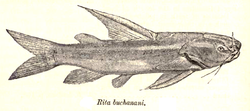 | ปลากดหมู (อังกฤษ: Rita catfishes) เป็นสกุลของปลาหนังน้ำจืด ในสกุล Rita (/ริ-ต้า/) ในวงศ์ปลากด (Bagridae)
ปลากดหมู เป็นปลาหนังที่มีลำตัวอ้วนป้อม มีหนวดสั้นๆ 4 คู่ 2 คู่ใต้คางเพื่อใช้เป็นอวัยวะสัมผัส และมีลักษณะเด่น คือ มีแผ่นกระดูกบริเวณท้ายทอยและบริเวณเหนือครีบอก เป็นแผ่นหนาและแข็งมาก
มีขนาดเฉลี่ยยาวประมาณ 19–30 เซนติเมตร ยกเว้นในชนิด R. rita ที่ยาวได้ 150 เซนติเมตร และชนิด R. sacerdotum ที่ยาวได้ถึง 200 เซนติเมตร ซึ่งนิยมเลี้ยงเป็นปลาสวยงามทั้งคู่เป็นปลาที่หากินตามพื้นน้ำ โดยกินปลาและสัตว์น้ำขนาดเล็กเป็นอาหาร พบกระจายพันธฺ์ในแม่น้ำสายใหญ่ในประเทศอินเดียและบางส่วนในประเทศพม่า |
| 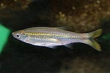 | ปลาซิวควาย (อังกฤษ: Silver rasbora, Yellowtail rasbora) เป็นปลาน้ำจืดจำพวกปลาซิวชนิดหนึ่ง มีชื่อวิทยาศาสตร์ว่า Rasbora tornieri อยู่ในวงศ์ปลาตะเพียน (Cyprinidae) มีรูปร่างยาวทรงกระบอก แบนข้างเล็กน้อย ปากเล็กไม่มีหนวด ตาโต ครีบเล็ก ครีบหางเว้าลึก มีเกล็ดใหญ่ ตัวมีสีเหลืองอ่อนอมทองมีแถบสีเงินพาดตามความยาวกลางลำตัวจนถึงโคนหาง ครีบสีเหลืองอ่อนมีขอบสีคล้ำ มีขนาดประมาณ 6 เซนติเมตร พบใหญ่สุด 10 เซนติเมตร
อาศัยอยู่เป็นฝูงใหญ่ในแม่น้ำและแหล่งน้ำนิ่ง รวมถึงลำธารในที่สูงบางแห่ง พบในภาคใต้ ภาคกลาง ถึงแม่น้ำโขง มีพฤติกรรมชอบตอมตะไคร่หรือสาหร่ายบริเวณใต้แพหรือท่าน้ำ อาหารได้แก่ พืชน้ำและแมลงน้ำขนาดเล็ก เป็นปลาเศรษฐกิจนิยมบริโภคโดยปรุงสด ทำปลาร้าหรือปลาแห้ง และนิยมเลี้ยงเป็นปลาสวยงามด้วย โดยที่ ดร.ฮิวจ์ แมคคอร์มิค สมิธ ได้รายงานว่า เป็นปลาทีมีขนาดใหญ่ที่สุดในจำพวกปลาซิวที่พบได้ในประเทศไทย พบชุกชุมในแม่น้ำสายใหญ่ๆ ถูกจับได้คราวละมากๆ ชาวชนบทนิยมใช้เป็นอาหารรับประทานกัน |
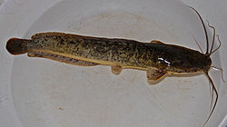 | ปลาดุกแอฟริกา เป็นปลาน้ำจืดในอันดับปลาหนังชนิดหนึ่ง มีชื่อวิทยาศาสตร์ว่า Clarias gariepinus ในวงศ์ปลาดุก (Clariidae) มีลักษณะทั่วไปคล้ายปลาดุกด้าน (C. batrachus) ซึ่งเป็นปลาในสกุลเดียวกัน แต่มีส่วนหัวยาวกว่าและแนวระหว่างจะงอยปากถึงท้ายทอยเว้าและโค้งลาด ด้านบนของศีรษะขรุขระกว่า เมื่อมองจากด้านบนจะเห็นเป็นรูปสามเหลี่ยม ท้ายทอยแหลมเป็นโค้ง 3 โค้ง โดยส่วนกลางยื่นยาวมากที่สุด ลำตัวยาว ครีบหลังและครีบก้นยาว ลำตัวด้านบนมีสีน้ำตาลคล้ำอมเหลือง และมีลายแต้มแบบลายหินอ่อนบนลำตัว แก้มและท้องสีจาง ที่โคนครีบหางมีแถบตามแนวตั้งสีจาง ซึ่งเป็นลักษณะสำคัญของปลาชนิดนี้ ครีบมีสีเข้ามกว่าลำตัวเล็กน้อย บางตัวอาจมีขอบครีบสีแดง
นับเป็นปลาที่ขนาดใหญ่สุดในสกุล Clarias ขนาดเมื่อโตเต็มที่ยาวได้ถึง 1.70 เมตร
เป็นปลาพื้นเมืองของทวีปแอฟริกา พบได้ในตอนเหนือและตอนตะวันออกของทวีป สำหรับในประเทศไทยได้ถูกนำเข้ามาในปี พ.ศ. 2528 โดยเอกชนบางรายในจังหวัดหนองคายและอุบลราชธานี โดยนำเข้ามาจากประเทศลาวเพื่อเลี้ยงไว้ดูเล่น เนื่องจากมีขนาดลำตัวใหญ่กว่าปลาดุกทั่วไป ต่อมากรมประมงได้นำมาทดลองผสมข้ามพันธุ์กับปลาดุกอุย (C. macrocephalus) พบว่าลูกผสมระหว่างพ่อปลาดุกแอฟริกาและแม่ปลาดุกอุยมีผลการรอดสูง และมีการเจริญเติบโตเร็วที่สุด เนื้อมีรสชาติที่ดีขึ้น จึงส่งเสริมและแพร่วิธีการเพาะขยายพันธุ์และเลี้ยงดูสู่เกษตรกรอย่างกว้างขวาง จนปัจจุบันนี้ กลายเป็นปลาเศรษฐกิจที่ได้รับความนิยมชนิดหนึ่งของไทย และเรียกชื่อลูกปลาผสมนี้ว่า "ปลาดุกบิ๊กอุย"
แต่ในปัจจุบัน สถานะของปลาดุกแอฟริกาในประเทศไทย จากบางส่วนได้หลุดรอดและถูกปล่อยลงสู่แหล่งน้ำธรรมชาติ ทำให้เป็นสิ่งมีชีวิตต่างถิ่นชนิดหนึ่งที่คุกคามการอยู่รอดสัตว์น้ำพื้นเมืองของไทย
สำหรับชื่ออื่น ๆ ที่เรียกปลาดุกแอฟริกา ก็ได้แก่ "ปลาดุกรัสเซีย", "ปลาดุกเทศ" เป็นต้น |
| 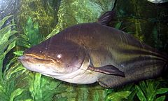 | ปลาค้าวดำ หรือ ปลาเค้าดำ (ชื่อวิทยาศาสตร์: Wallagonia micropogon) เป็นปลาน้ำจืดชนิดหนึ่ง อยู่ในวงศ์ปลาเนื้ออ่อน (Siluridae) จัดเป็นปลาที่อยู่ในอันดับปลาหนัง (Siluriformes)
ปลาค้าวดำมีรูปร่างลำตัวยาวแต่ค่อนข้างป้อม ลำตัวที่อยู่ค่อนไปทางหางมีลักษณะแบนข้างมาก พื้นลำตัวสีเทาถึงดำสนิท ส่วนหัวมีขนาดใหญ่และแบน ปากกว้าง ภายในมีฟันซี่เล็ก ๆ อยู่ในขากรรไกรทั้ง 2 ข้าง มีหนวด 2 คู่ โดยคู่ที่อยู่มุมปากมีลักษณะเรียวยาว ส่วนคู่ที่ใต้คางจะสั้นและเล็กมาก มีครีบทั้งหมด 7 ครีบ ครีบก้นใหญ่และยาวจรดครีบหาง ขอบปลายหางด้านบนจะใหญ่กว่าด้านล่าง ส่วนท้องป่องออก ส่วนหลังยกสูงขึ้นกว่าปลาค้าวขาว (Wallago attu) ซึ่งเป็นปลาที่มีลักษณะใกล้เคียงกัน แต่จัดอยู่ในคนละสกุล
มีขนาดลำตัวยาวได้ถึง 1 เมตร น้ำหนักกว่า 50 กิโลกรัม โดยอาจยาวได้ถึงกว่า 2 เมตร น้ำหนัก 80 กิโลกรัม สถิติที่ใหญ่ที่สุดพบที่ปากน้ำโพ จังหวัดนครสวรรค์
พฤติกรรมตามปกติ มักจะซุกตัวอยู่นิ่ง ๆ ใต้น้ำ เป็นปลาที่สายตาไม่ดี จึงใช้หนวดในการนำทางและหาอาหาร พบตามแม่น้ำสายใหญ่ ๆ ทั้งภาคกลางและภาคอีสานรวมทั้งภาคใต้ของประเทศไทย เช่น แม่น้ำเจ้าพระยาและสาขา, แม่น้ำโขงและสาขา, แม่น้ำตาปีรวมทั้งที่ทะเลสาบสงขลาด้วย เป็นต้น
ปลาค้าวดำ มีสถานภาพในปัจจุบันใกล้สูญพันธุ์อีกชนิดหนึ่งในธรรมชาติ แต่สามารถเพาะขยายพันธุ์ได้โดยสถานีประมงน้ำจืดจังหวัดสุราษฎร์ธานี ในปี พ.ศ. 2534 โดยได้มีการปล่อยลูกปลาที่เพาะได้กลับคืนถิ่นธรรมชาติ[2]
ปลาค้าวดำเป็นปลาไทยอีกชนิดหนึ่งที่นิยมเลี้ยงเป็นปลาสวยงาม แต่เป็นปลาที่มีนิสัยดุร้าย ก้าวร้าว หวงถิ่นที่อยู่อาศัยมาก กินปลาขนาดเล็กตัวอื่นเป็นอาหาร จึงมักเลี้ยงตัวเดียวเดี่ยว ๆ นอกจากนี้แล้ว ปลาค้าวดำเป็นปลาที่สามารถฮุบกลืนกินเหยื่อหรืออาหารขนาดใหญ่ได้ โดยในอดีตที่บ้านปากกิเลน อำเภอไทรโยค จังหวัดกาญจนบุรี เคยมีเหตุการณ์ปลาค้าวดำกินคนมาแล้ว โดยเกิดเหตุที่โป๊ะท่าน้ำ เมื่อทารกคนหนึ่งอุจจาระเลอะเปรอะเปื้อนทั้งตัว ผู้เป็นแม่จึงนำไปแกว่งล้างในแม่น้ำ ทันใดนั้นก็ได้มีปลาค้าวดำตัวใหญ่โผล่ขึ้นมาจากน้ำฮุบกินเด็กเข้าไปทั้งตัว เหตุการณ์นี้เป็นที่แตกตื่นตกใจของผู้คนที่อาศัยอยู่ในหมู่บ้านนั้น[3] นอกจากนี้แล้ว ปลาค้าวดำมีชื่อเรียกอื่น ๆ อีก เช่น "ปลาอีทุก" หรือ "ปลาทุก" ในภาษาอีสาน โดยเรียกตามสีลำตัวที่มีสีดำสนิทเหมือนกับคนสวมชุดไว้ทุกข์ |
| 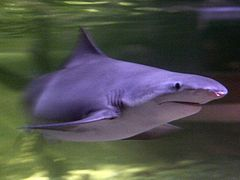 | ปลาฉลามแม่น้ำฟันหอก หรือ ปลาฉลามฟันหอก (อังกฤษ: Speartooth shark; ชื่อวิทยาศาสตร์: Glyphis glyphis) เป็นปลาฉลามชนิดหนึ่ง จำพวกปลาฉลามแม่น้ำ จัดอยู่ในวงศ์ปลาฉลามครีบดำ (Carcharhinidae)
ปลาฉลามแม่น้ำฟันหอก เป็นปลาฉลามที่อาศัยอยู่ตามชายฝั่งทะเลแถบป่าชายเลนทางตอนเหนือของออสเตรเลีย, นิวกินี และบอร์เนียว โดยสามารถปรับตัวอาศัยให้อยู่ในน้ำจืดสนิทหรือน้ำกร่อยได้ มีรูปร่างเพรียวยาวสีเทา มีครีบหลังชิ้นที่ 2 ที่มีขนาดใหญ่และมีปื้นสีดำอยู่ใต้ครีบอกทั้ง 2 ข้าง มีซี่เหงือกทั้งหมด 5 ซี่ โดยที่ซี่แรกจะมีขนาดยาวกว่าซี่อื่น ๆ มีฟันรูปร่างเป็นรูปสามเหลี่ยมขนาดใหญ่ โดยฟันแถวบนนั้นมีลักษณะเป็นหยัก ฟันแถวล่างมีรูปร่างเหมือนหัวหอกแคบ ๆ และมีรอยหยักอยู่ตรงปลาย ใช้สำหรับกัดกินอาหารซึ่งได้แก่ ปลากระดูกแข็ง และสัตว์น้ำหน้าดินที่มีกระดองแข็งอย่างครัสเตเชียน เป็นอาหารโดยเฉพาะ
มีขนาดความยาวโดยเฉลี่ย 1 เมตร แต่เชื่อว่าอาจใหญ่ได้เต็มที่ถึง 2.5–3 เมตร
ปลาฉลามแม่น้ำฟันหอก ได้รับการบรรยายทางวิทยาศาสตร์เป็นครั้งแรกจากนักชีววิทยาชาวเยอรมัน 2 คน คือ โยฮันเนส มึลเลอร์ และยาค็อบ เฮนเล ในราวปี ค.ศ. 1839–41 โดยบรรยายจากตัวอย่างสตั๊ฟฟ์ของปลาฉลามเพศเมียความยาว 1 เมตร ที่ไม่ทราบที่มา (เป็นไปได้ว่าอาจจะมาจากทะเลจีนใต้ หรือมหาสมุทรอินเดีย) จนกระทั่งในปี ค.ศ. 1843 นักมีนวิทยาชาวอเมริกันเชื้อสายสวิตเซอร์แลนด์ หลุยส์ อกาซซี่ ได้ตั้งสกุล Glyphis ขึ้นมาใหม่จากซากฟอสซิลที่พบในอังกฤษ คือ G. hastalis แต่อย่างไรก็ตามสกุล Glyphis ก็ยังไม่ได้รับการยอมรับและถูกนำมาใช้ จนกระทั่ง แจ็ค เกอร์ริค ได้นำมาใช้ในปี ค.ศ. 1982 โดยเปลี่ยนมาจากสกุล Carcharhinusปลาฉลามแม่น้ำฟันหอก ไม่ได้เป็นปลาที่ว่องไวปราดเปรียวเหมือนอย่างปลาฉลามในวงศ์เดียวกันชนิดอื่น ๆ ที่พบในทะเล โดยได้วิวัฒนาการตัวเองมาเป็นนักล่าในแม่น้ำที่มืดมิดและไหลเชี่ยวได้เป็นอย่างดี โดยใช้อีเล็กโทรเซปชั่นในการหาอาหาร และครีบหลังชิ้นที่ 2 ที่มีขนาดใหญ่เคลื่อนไหวด้วยความเร็วต่ำในกระแสน้ำที่ไหลเชี่ยว และจะให้กำเนิดลูกด้วยการคลอดออกมาเป็นตัวในช่วงเดือนตุลาคม-ธันวาคม ลูกปลาแรกเกิดมีความยาว 50-59 เซนติเมตร และจะเพิ่มความยาวขึ้น 19 เซนติเมตรในทุก ๆ ปี |
| 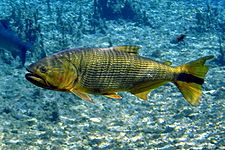 | ปลาแซลมอนทองคำ หรือที่เรียกอีกชื่อนึงว่า ปลาโดราโด (Dorado, โดราโด ในภาษาสเปน หมายถึง "ทองคำ") ปลาน้ำจืดชนิดหนึ่งมีชื่อวิทยาศาสตร์ว่า Salminus brasiliensis ในวงศ์ปลาคาราซิน (Characidae) ในอันดับปลาคาราซิน (Characiformes)
ลักษณะภายนอก มีส่วนหัวขนาดใหญ่ ปากกว้างมีลักษณะเฉียงลง ภายในปากเต็มไปด้วยฟันซี่เล็ก ๆ ที่แหลมคม ขากรรไกรแข็งแรง ครีบหลังอยู่ถัดออกไปกว่าความยาวของครึ่งลำตัว มีครีบไขมันก่อนถึงครีบหาง ขนาดโตเต็มที่ยาวได้ประมาณ 3 ฟุต หนักถึง 68 ปอนด์ เมื่อโตเต็มที่แล้วจะมีสีของลำตัวเป็นสีเหลืองทองอร่าม เมื่อยังเล็กลำตัวจะเป็นสีเงินอมเทา ครีบหางเป็นสีส้มปนแดงและมีแถบสีดำพาดตั้งแต่โคนหางไปจรดสุดปลายครีบ ครีบอกเป็นสีเหลืองปนส้ม เมื่อโตขึ้นจะสีลำตัวจะค่อย ๆ กลายเป็นสีส้ม และเริ่มเข้มขึ้นเรื่อย ๆ ตามวัย จนกระทั่งกลายเป็นสีทองไปในที่สุด มีอายุยืนได้สูงสุด 9 ปี
กระจายพันธุ์อยู่ในทวีปอเมริกาใต้ในแม่น้ำอเมซอนและสาขา บริเวณรอยต่อระหว่างบราซิล, อาร์เจนตินา, เปรู, ปารากวัย และโบลิเวีย
เป็นปลาที่กินเนื้อเป็นอาหาร ล่าเหยื่อด้วยความเร็วสูงโดยใช้ขากรรไกรที่แข็งแรงและฟันอันคมกริบงับเหยื่อ ซึ่งได้แก่ ปลาและสัตว์น้ำขนาดเล็กชนิดต่าง ๆ รวมทั้งสัตว์ครึ่งบกครึ่งน้ำและสัตว์เลือดอุ่นขนาดเล็ก เช่น นก หรือ หนู ด้วย โดยมีพฤติกรรมอาศัยอยู่เป็นฝูงขนาดเล็ก บางครั้งจะล่าเหยื่อโดยการเข้าไปปะปนในฝูงปลาที่กำลังกินเมล็ดพืชที่ตกลงน้ำเพิ่อหาจังหวะโฉบงับกิน จนได้รับฉายาจากชาวพื้นเมืองว่า "Tigre del rio" (เสือแม่น้ำ)
และถึงแม้นว่าจะได้ชื่อเป็นปลาแซลมอน ด้วยเหตุที่มีรูปร่างคล้ายกัน จึงถูกเรียกว่า "ปลาแซลมอนทองคำ" แต่แท้ที่จริงแล้ว ปลาชนิดนี้มิได้จัดว่าเป็นปลาจำพวกแซลมอน แต่ประการใด
ปลาแซลมอนทองคำนั้นนิยมตกเป็นปลาเกม ในกีฬาตกปลาด้วยความที่เป็นปลาขนาดใหญ่ และต่อสู้กับเบ็ดได้อย่างสนุกรวมถึงมีสีสันที่สวยงามอีกด้วย และนอกจากนี้ยังนิยมเลี้ยงเป็นปลาสวยงามสำหรับผู้ที่นิยมเลี้ยงปลาขนาดใหญ่ ซึ่งพฤติกรรมของปลาแซลมอนทองคำในที่เลี้ยงนั้นดุร้ายมาก จนไม่สามารถเลี้ยงรวมกับปลาชนิดอื่นได้เลย นอกจากพวกเดียวกันเอง |
| 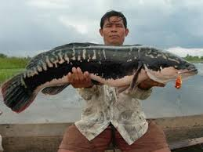 | ปลาชะโด เป็นปลาน้ำจืดขนาดใหญ่ชนิดหนึ่ง มีชื่อวิทยาศาสตร์ว่า Channa micropeltes อยู่ในวงศ์ปลาช่อน (Channidae) จัดเป็นปลาที่มีขนาดใหญ่ที่สุดในวงศ์นี้ โดยมีขนาดโตเต็มที่ได้ถึง 1 เมตร หรือ 1.5 เมตร น้ำหนักถึง 20 กิโลกรัม มีรูปร่างลำตัวค่อนข้างกลมยาว พื้นลำตัวสีน้ำตาลอมเขียว มีลายประสีดำกระจายทั่วตัว ภายในปากมีฟันแหลมคม เมื่อยังเป็นปลาขนาดเล็กจะมีสีลำตัวเป็นสีน้ำตาลและมีแถบสีดำ, ส้ม และเหลืองพาดตามความยาวลำตัว 2 แถบ บริเวณหางสีแดงสด เมื่อเริ่มโตขึ้นมาสีและลายจะเริ่มจางหายไปกลายเป็นสีเขียวอมน้ำตาลคล้ายสีของเปลือกหอยแมลงภู่แทน
โดยการที่สีของปลาเปลี่ยนไปตามวัยนี้ ปลาชะโดจึงมีชื่อเรียกต่างออกไปตามวัย เมื่อยังเป็นลูกปลาจะถูกเรียกว่า "ลูกครอก" หรือ "ชะโดป๊อก" เมื่อโตเต็มที่แล้วจะถูกเรียกว่า "ชะโดแมลงภู่" ตามสีของลำตัว หากสีดำจะเรียกว่า "ชะโดถ่าน"
นอกจากจะเป็นปลาที่ใหญ่ที่สุดในวงศ์นี้แล้ว ยังมีอัตราการเจริญเติบโตเร็วที่สุดในวงศ์ปลาช่อน และยังมีอุปนิสัยดุร้ายมากที่สุดด้วย โดยเฉพาะอย่างยิ่งในฤดูผสมพันธุ์ปลาตัวผู้ซึ่งเป็นผู้ดูแลไข่และลูกอ่อน จะกัดและทำร้ายสัตว์ทุกชนิดที่ผ่านเข้ามาใกล้รัง ไม่เว้นแม้กระทั่งมนุษย์ จึงมักมีผู้ถูกปลาชะโดกัดทำร้ายบ่อย ๆ ในช่วงนี้ ฤดูผสมพันธุ์ของปลาชะโดจะมีขึ้นในเดือนกรกฎาคม-กันยายน รังมีการตีแปลงใกล้ชายฝั่ง เรียกว่า "ชะโดตีแปลง"
เป็นปลาที่พบได้ทุกภาคของประเทศ และพบในประเทศใกล้เคียงเช่น มาเลเซีย, อินโดนีเชีย ตอนใต้ของจีน และประเทศอื่น ๆ ในภูมิภาคเอเชียตะวันออกเฉียงใต้ ด้วย
ปลาชะโดมีการเลี้ยงในกระชังตามแม่น้ำสายใหญ่เช่น แม่น้ำเจ้าพระยา, สะแกกรัง และอ่างเก็บน้ำเขื่อนศรีนครินทร์, เขื่อนวชิราลงกรณ์ จังหวัดกาญจนบุรี มักจะไม่นิยมบริโภคสด เพราะเนื้อจืด แข็ง คาว และมีก้างเยอะ จึงไม่ค่อยเป็นที่นิยมเท่าปลาช่อน ซึ่งอยู่ในวงศ์เดียวกัน แต่มีขนาดเล็กกว่า หากจะบริโภคมักจะแปลงทำเป็นปลาเค็มและตากแห้งมากกว่า
นอกจากเป็นปลาเศรษฐกิจแล้ว ยังมีการเลี้ยงเป็นปลาสวยงามด้วย โดยเฉพาะลูกปลา พบมีขายในตลาดปลาสวยงามบ่อย ๆ และมีราคาถูก |
| 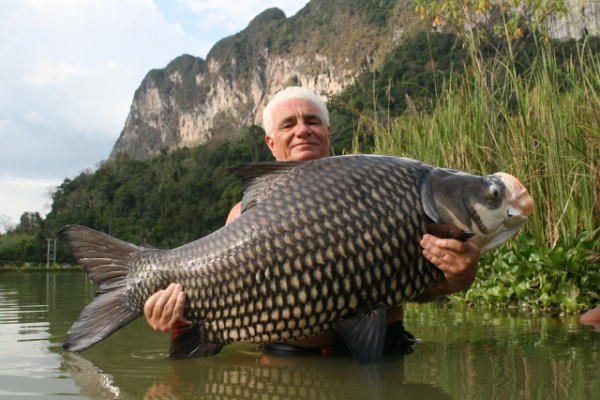 | ปลากระโห้ (อังกฤษ: Siamese giant carp, Giant barb) เป็นปลาน้ำจืดขนาดใหญ่ชนิดหนึ่ง จัดเป็นปลาในวงศ์ปลาตะเพียน (Cyprinidae) เป็นปลาน้ำจืดที่มีขนาดเกล็ดที่มีขนาดใหญ่ที่สุดในโลก และเป็นปลาในวงศ์ปลาตะเพียนที่มีขนาดใหญ่ที่สุดอีกด้วย โดยเฉลี่ยมักมีขนาดประมาณ 1.5 เมตร แต่พบใหญ่สุดได้ถึง 3 เมตร หนักได้ถึง 150 กิโลกรัม ในอดีต เกล็ดปลากระโห้สามารถนำมาทอดรับประทานเป็นอาหารที่ขึ้นชื่อจัดเป็นปลาเพียงชนิดเดียว ที่อยู่ในสกุล Catlocarpio มีลักษณะสำคัญคือ ส่วนหัวโต ปากกว้าง ตาเล็ก ไม่มีหนวด ปลาวัยอ่อนหัวจะโตมากและลำตัวค่อนไปทางหาง ทำให้แลดูคล้ายปลาพิการไม่สมส่วน ขอบฝาปิดเหงือกมนกลมและใหญ่กว่าปลาชนิดอื่น ๆ ครีบหลังและครีบหางใหญ่ มีเกล็ดขนาดใหญ่ปกคลุมลำตัว บนเพดานปากมีก้อนเนื้อหนา เหงือกมีซี่กรองยาวและถี่มาก ตัวมีสีคล้ำอมน้ำเงินหรือน้ำตาลเข้ม ครีบมีสีแดงเรื่อ ๆ ด้านท้องมีสีจางพบเฉพาะในแม่น้ำสายใหญ่ ตั้งแต่แม่น้ำแม่กลองถึงแม่น้ำโขง โดยเฉพาะในแม่น้ำเจ้าพระยาในแถบที่ราบลุ่มภาคกลางของประเทศไทยในหลายจังหวัด และยังพบได้บ้างที่แม่น้ำป่าสัก ในต่างประเทศพบได้ที่ลาว, กัมพูชา และเวียดนาม[5] ปลาวัยอ่อนมักอยู่รวมเป็นฝูงในวังน้ำลึก ปัจจุบันลดจำนวนลงไปมากเรื่องจากปัญหาเรื่องสิ่งแวดล้อมและการถูกจับเป็นจำนวนมาก จัดอยู่ในสถานภาพเป็นปลาใกล้สูญพันธุ์ชนิดหนึ่ง ปัจจุบัน ปลากระโห้สามารถเพาะพันธุ์ได้แล้วเป็นบางส่วนจากการผสมเทียม ในธรรมชาติจะแพร่พันธุ์ระหว่างเดือนกรกฎาคม-กันยายน โดยปลาจะเริ่มเข้าสู่วัยเจริญพันธุ์เมื่ออายุได้ 7 ปี วางไข่ลอยไปตามกระแสน้ำ ไข่มีสีเหลืองอ่อนลักษณะกึ่งลอยกึ่งจม เส้นผ่าศูนย์กลางประมาณ 1.4 มิลลิเมตร ปริมาณไข่จะมีจำนวนมากนับล้าน ๆ ฟอง แต่ไข่ส่วนใหญ่และลูกปลาจะถูกปลาอื่นจับกินแทบไม่มีเหลือ ปัจจุบันกรมประมงได้ปล่อยลูกปลาที่เกิดจากการเพาะขยายพันธุ์คืนสู่แหล่งน้ำธรรมชาติปีละประมาณ 200,000-1,000,000 ตัว แต่ทว่าโอกาสที่ลูกปลาเหล่านี้จะเติบโตจนเต็มวัยในธรรมชาติก็มีโอกาสน้อยมาก
อาหารของปลากระโห้คือ แพลงก์ตอนและปลาขนาดเล็ก แต่ก็สามารถกินพืชเช่น สาหร่ายหรือเมล็ดพืชได้
ปลากระโห้นอกจากนำมาทำเป็นอาหารโดยการปรุงสดแล้ว ยังสามารถเลี้ยงเป็นปลาสวยงามได้อีกด้วย |